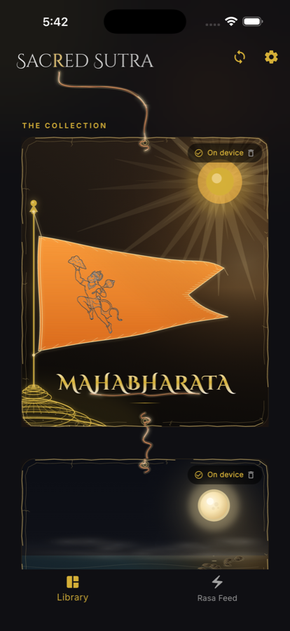
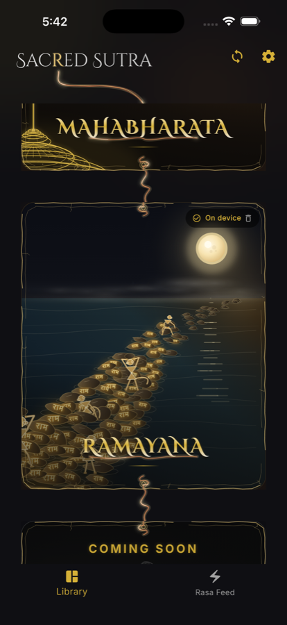
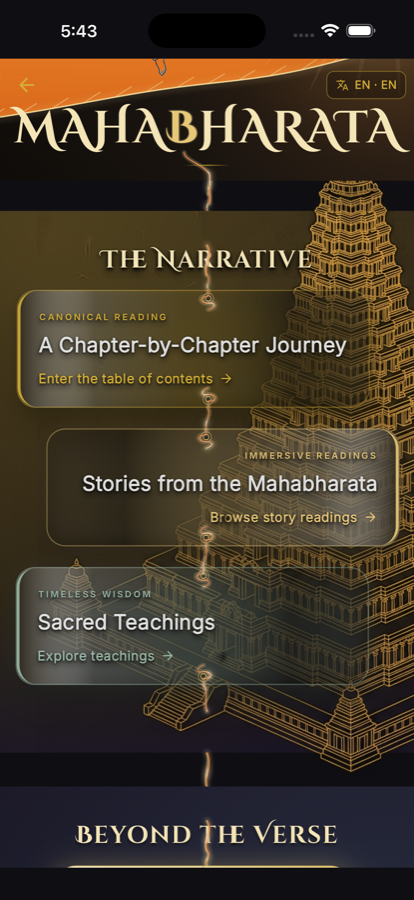
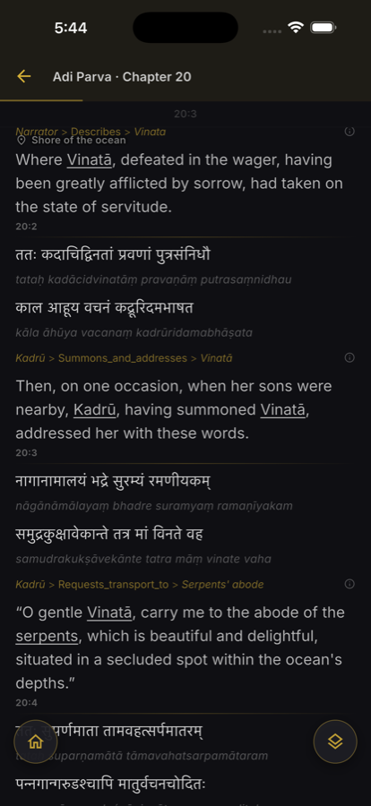
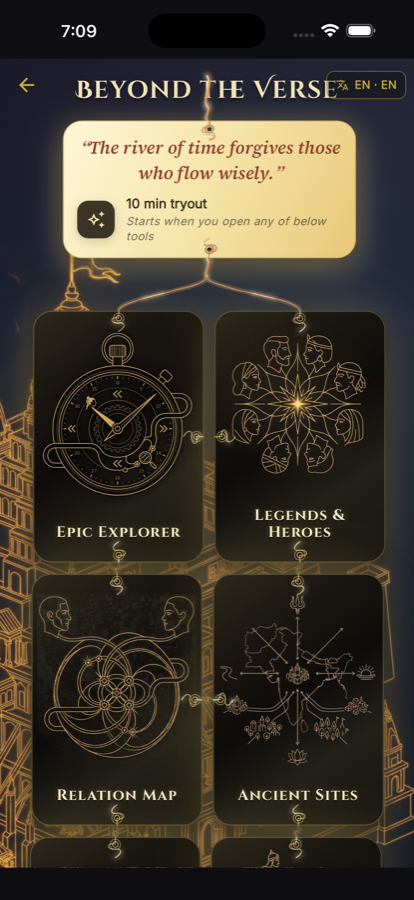
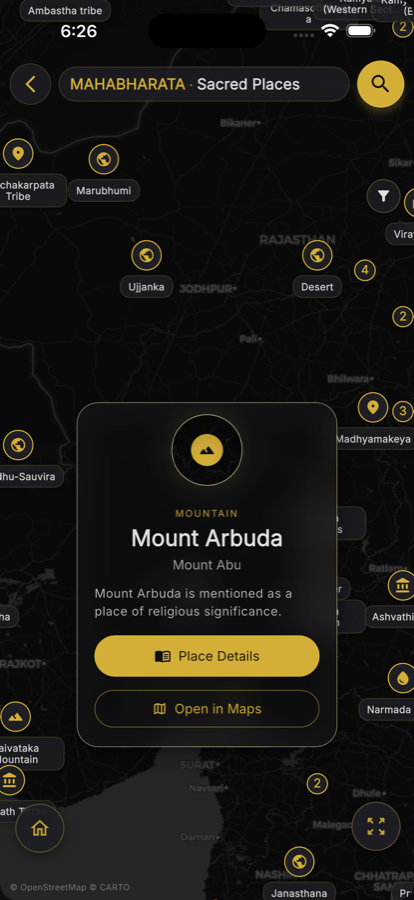
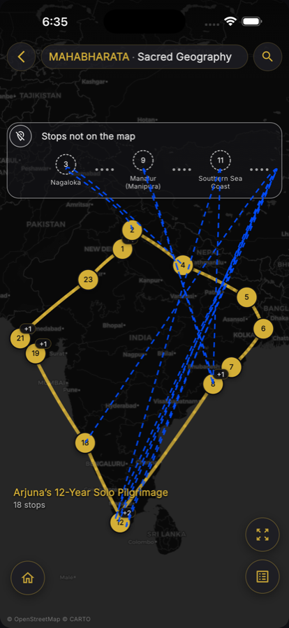
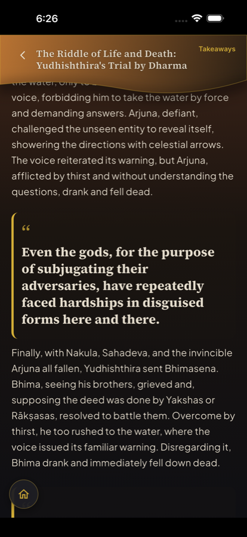

Offline Epics • Sacred Teachings • Deep Search
Sacred Sutra is the offline Mahabharata and Ramayana for readers who want the complete text—not a summary—with Sacred Teachings, character intelligence, sacred geography, quizzes, and search that makes tens of thousands of verses navigable.








Curated entry to major discourses—Gita, Vidura Niti, Yaksha Prashna, Bhishma’s counsel, and more. Read in context and deepen understanding with optional quizzes.
Devanagari, transliteration, and translations in a premium reader—with verse context, speakers, places, and tools that keep you oriented through the epic.
Explore ancient sites and narrative journeys on interactive maps—from pilgrimages to exiles—and connect places back to the verses where they appear.
Move beyond linear reading: stories, characters, paths, wars, and relation maps that make the Mahabharata’s scale feel navigable.
Find meaning across tens of thousands of verses with fast, on-device search—no account required and no cloud dependency for core study.
Designed to work primarily offline. Reading progress and preferences stay on your device. No accounts. No logins. Your study remains yours.
Need help? Contact support at digish.pandya@gmail.com.
For detailed information on how we protect your data, please read our Full Privacy Policy.